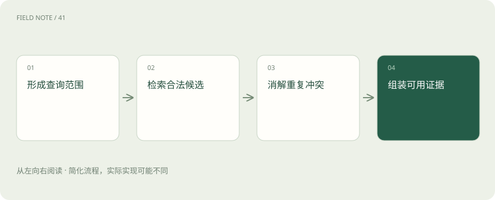
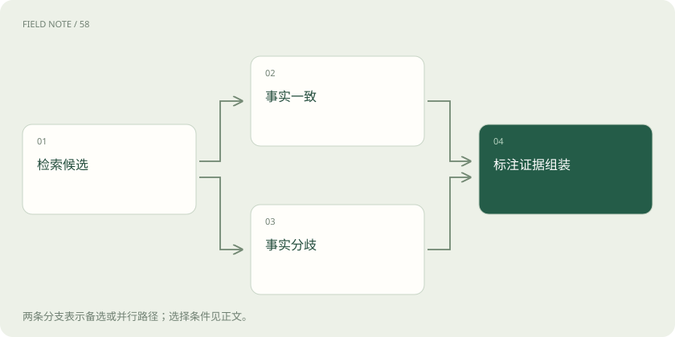
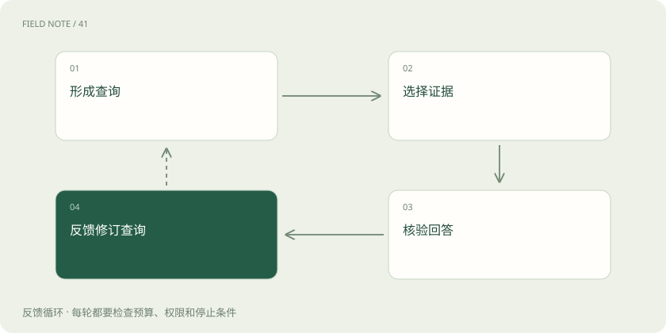

先读哪些知识
先用一个类比理解
类比只帮助建立直觉，不等同于技术的完整机制。
一图看懂

先把当前问题变成检索任务
召回不是看到用户就加载全部历史，而是判断当前决策缺少什么。问题“按我的习惯准备培训”需要查个人偏好；“去年那次迁移为什么延期”需要查特定项目经历。查询应明确主体、任务、时间与所需证据类型，再决定采用关键词、属性过滤还是语义匹配。
教学中的培训助手需要同时区分受训者与组织者。组织者喜欢短会议，不代表所有受训者都喜欢短课程。查询阶段先确定偏好属于谁，可以减少后续把高相似但错主体的信息放进回答。无法确定主体时应保留缺口，不能让检索分数代替身份判断。
精确检索与语义检索配合
精确检索适合员工编号、项目代号、日期和明确属性，语义检索适合用户改换说法后的相近经历。两者不是先进与落后的关系：用语义相似度查唯一订单，可能找出描述很像的另一单；只匹配原词，又可能漏掉“压缩会时”与“会议要简短”的同义表达。
可以先用授权空间与主体过滤缩小范围，再用语义或关键词找候选，最后按任务重排。Graphiti 当前官方文档介绍结合语义、关键词与图关系的混合检索，说明图邻接也是选择证据的一种途径。具体路线依赖数据与问题，不应宣称某种索引天然解决所有召回问题。
权限和时间先于相似度
相似度高只能说明文本关联，不能证明当前用户有权读取。权限检查应覆盖租户、主体、项目与用途，且在返回内容之前生效。时间检查则要辨别事实是否仍有效、问题是否询问历史、来源是否已经撤回。历史事实并非无价值，只是需要放到正确的时间问题里使用。
用户问“现在由谁审批”应优先使用当前生效记录；问“去年为什么走那条流程”则可能需要旧审批人。教学规则可以将当前有效与历史有效分开过滤，避免简单按最近写入时间排序。恢复的授权也应读取当前状态，不能沿用记录产生时曾经具备的权限。
图解：冲突处理路径

冲突与去重不能靠拼接
多个候选可能只是同一原话的摘要、向量切片与项目画像。把它们当成三份独立证据，会夸大可信度。去重应追溯来源和事实身份，保留一个主要表达并关联证据。对于互相矛盾的候选，则要按主体、时间、来源可靠性和明确修订关系分析。
若两条记录分别说培训在周二与周五，先检查是否对应不同场次，再检查其中一条是否被正式修订。仍无法裁决时可以把分歧展示给用户，而不是选分数较高的一条冒充确定结果。教学中的合并策略应保留冲突原因，使未来出现新证据时可以重新判断。
组装是把证据放进当前上下文
召回结果还需经过选择、压缩和标注，才能进入模型输入。可用记忆应说明内容、主体、有效时间与来源，并区分确定事实、偏好和推断。上下文容量有限时，优先放入会改变当前决策的条目；相似但无关的经历可以保留在库中，不必全部展示。
外部内容进入记忆后仍保有数据身份。系统不能因为某段材料被多次召回，就将其中的越权指令提升为宿主指令。教学示例可把“用户曾明确要求报告匿名”与“网页建议收集身份证号”分别标注来源，组装时沿用既有信任边界，权限仍由运行系统判断。
RAG与记忆关注的问题不同
RAG 通常从知识材料中寻找支持当前回答的证据，记忆召回更关注用户、任务与历史互动之间的连续性，例如此前确认的偏好和未完成决定。两者共享检索、过滤和重排技术，也可以检索同一个存储，但目标不同会改变写入政策、时效规则与评估方法。
它们都不同于缓存、KV Cache 与模型权重。答案缓存复用某次计算结果，KV Cache 复用模型注意力计算的中间状态，权重承载训练后的参数化能力；记忆记录则可以按主体查看、修订和删除。不能把清空对话窗口等同删除长期记录，也不能把向量检索命中理解为模型已经重新训练。
RAG 描述检索增强生成的方法，记忆描述信息保存与复用的职责；记忆召回也可以成为 RAG 的检索来源，两者不是互斥类别，也不以资料是否公开作区分。
遗忘要处理派生信息
遗忘可能指不再优先召回、超过有效期、逻辑删除或彻底清除，不同操作效果不同。Mem0 当前文档说明过期条目通常从 search 与 get_all 隐藏，但按 ID 获取仍可返回；因此设置过期时间并不等于删除。产品策略应明确什么仍存在、什么还可被访问。
删除原始条目后，摘要、画像、嵌入索引和缓存中可能仍有派生内容。教学工程建议为派生对象保留来源关系，以便源记录撤回时传播失效并重建必要摘要。若无法定位派生链，就不能轻率声称“所有相关记忆已删除”；应准确报告实际完成的清理范围。
当前 Mem0 还提供显式包含过期结果的选项。因此过期也不是访问控制措施；是否允许按 ID 或其他入口读取，仍要检查实际权限与应用策略。
图解：召回反馈闭环

评测区分误记漏记与过期召回
误记是返回不属于该主体或与事实不符的内容；漏记是相关有效证据存在却未取出；过期召回则是拿曾经正确的事实回答当前问题。这三类问题需要不同修复：主体过滤、查询与排序、有效期处理。只看回答是否流畅，会把严重的事实错配隐藏起来。
可构造教学任务：用户先偏好线下培训，后来明确改为远程，同时另一位同名用户仍偏好线下。检查系统能否在新任务中取对主体与最新偏好，并在历史问题中找回旧决定。评估还应看来源能否追溯、冲突是否诚实呈现、删除后是否残留；这些比虚构一个命中率数字更能揭示机制缺陷。
放在一起对比
| 对象 | 需要核验 | 错误后果 |
|---|---|---|
| 精确检索 | 身份和属性 | 唯一对象错配 |
| 语义检索 | 相关性与来源 | 相似内容冒充事实 |
| 时效过滤 | 问题时间与有效期 | 过期事实回答现在 |
放进真实场景
教学案例：同名用户与偏好修订同时出现，必须在授权主体范围内检索有效版本。
别踩这个误区
想一想
删除一条记忆后为什么还要检查摘要？
摘要可能是源记录的派生对象，需要沿来源关系失效或重建。
关联阅读
资料与边界
本文为原创知识讲解。类比和图示经过简化；示例数字不代表实测或报价。整理日期：2026-11-05。文末列出对应技术的原始资料，具体功能与版本支持请以原文为准。
按完整目录逐篇阅读